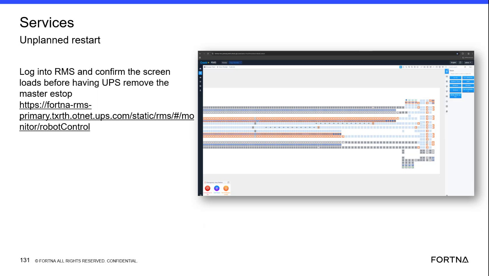

| Procedure ID | proc_confirm_geek_rms_robotcontrol_before_estop_clear_v1 |
|---|---|
| Title | Confirm Geek+ RMS Robot Control Screen Loads Before Master E-Stop Clear |
| Procedure Type | diagnostic |
| Primary Role | L2_support |
| Support Safe | Yes |
| Capability Tags | e_stop_or_safety_stop |
| Access Surface | rms_ui |
| Audience Roles | L2_support, operator |
| Failure Pattern Tags | web_app_fault |
| Validation Status | needs_sme_review |
| Merge Status | source_finalized |
Use the live RMS / fleet status UI to sign in, open the monitor/robotControl screen, and confirm that it is available for viewing before the site or UPS coordinates removal of the physical master E-stop. This procedure does not authorize or perform the physical E-stop reset.
Use during an unplanned-restart situation when the site or UPS needs confirmation that the live RMS monitor/robotControl screen is available before removing the physical master E-stop.

Responsible role: L2_support
Instruction:
On the live RMS / fleet status UI, open the displayed monitor/robotControl path: https://fortna-rms-primary.txrth.otnet.ups.com/static/rms/#/monitor/robotControl.
Expected result:
The RMS sign-in page or RMS monitor/robotControl entry point is displayed.
Stop or Escalate If:
Responsible role: L2_support
Instruction:
Sign in to the live RMS / fleet status UI using the available administrator-related access indicated by the source. Do not infer or create credentials or permissions that are not provided.
Expected result:
The RMS / fleet status UI accepts the available access and presents the authenticated RMS interface.
Stop or Escalate If:
Responsible role: L2_support
Instruction:
In the live RMS / fleet status UI, open or remain on monitor/robotControl and verify that the robotControl screen finishes loading and is available for viewing.
Expected result:
The RMS monitor/robotControl screen is displayed and available for viewing.
Stop or Escalate If:
Responsible role: L2_support
Instruction:
After the RMS robotControl screen-load check succeeds, communicate to the site or UPS that the RMS screen is available. Do not communicate approval to perform any physical action beyond reporting the screen state.
Expected result:
The site or UPS receives a clear report that the RMS robotControl screen is available for viewing.
Stop or Escalate If: